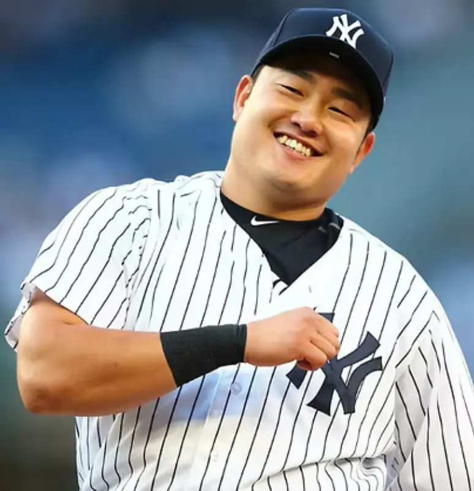

Ji-Man Choi
Career Highlights & Facts
(Facts are AI-generated and may require verification)
- Known for a signature, high-energy home run celebration involving a unique 'bat flip' and a joyful trot.
- Possesses a reputation as a fan favorite due to a charismatic personality and frequent displays of on-field enthusiasm.
- Demonstrated defensive versatility by primarily playing first base while also serving as a designated hitter.
Would you like to find out more about Ji-Man Choi?
Player Biography
Ji-Man Choi June 28, 2017 / in BioProject - Person / by admin This bio is not assigned. Want to write a SABR bio? Contact bioproject@sabr.org . No items found Full Name Choi Born May 19, 1991 at Incheon, Incheon (South Korea) If you can help us improve this player’s biography, contact us . Tags None Share this entry Share on Facebook Share on X Share on LinkedIn Share on Reddit Share by Mail
Wikipedia Summary:
Ji-man Choi is a South Korean professional baseball designated hitter and first baseman who is a free agent. He has previously played in Major League Baseball (MLB) for the Los Angeles Angels, New York Yankees, Milwaukee Brewers, Tampa Bay Rays, Pittsburgh Pirates, and San Diego Padres. Choi signed with the Seattle Mariners in 2010 and made his MLB debut with the Angels in 2016. His longest tenure was with the Rays, playing for the team from 2018 to 2022.
Career Totals
| WAR | AB | H | HR | BA | R | RBI | SB | OBP | SLG | OPS | OPS+ |
|---|---|---|---|---|---|---|---|---|---|---|---|
| 4.8 | 1567 | 367 | 67 | .234 | 190 | 238 | 6 | .338 | .426 | .764 | 112 |
Statistics via Baseball-Reference.com
The Original Clue